Votre avocat est joignable par téléphone ou par mail. Indisponible ? Vous êtes recontacté sous 24 h.
Aucun filtre : votre avocat est votre interlocuteur direct. Il vient à votre rencontre.
Une expertise stratégique et technique dans chaque domaine, la même exigence pour chaque client.